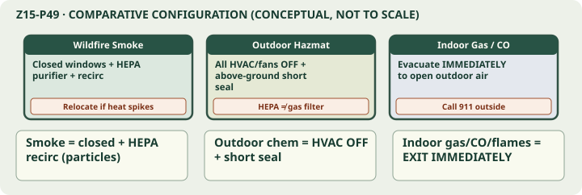

Z15-P49 · Disaster scenarios · New manuscript
Separate wildfire HEPA clean rooms, hazmat room sealing, and evacuation orders
Prevent fatal confusion between three very different airborne emergencies (smoke filtration, short-term chemical sealing, and immediate exit).
When it applies · Multi-hazard residential decision-making when smoke, chemical plumes, or indoor gas leaks occur.
Equipment · Official agency alert channel, portable HEPA purifier (smoke only), and pre-planned evacuation routes.

Actions
- For wildfire particles use cleaner indoor air and filtered recirculation if the building can stay cool. Relocate early if it cannot. For an external chemical release follow specific directions on room and ventilation controls.[D07, D15, D20]
- HEPA filters remove particles. They do not make a room safe from all chemicals or carbon monoxide. Follow emergency directions rather than substituting one shelter method for another.[D07, D15, C07]
- Always follow live local fire, hazmat, and emergency-management directives first—never apply a wildfire smoke guide to a chemical tanker spill or an indoor CO alarm.[D15, D07, C07]
Failure recognition · Running a portable HEPA fan expecting it to filter chlorine gas during a rail spill, OR sealing windows tight during an indoor natural-gas leak.[D15, U11]
Verify · Confirm household distinguishes particulate smoke (HEPA), short-term outdoor chemical gas (HVAC OFF + above-ground seal), and indoor CO/gas/fire (EXIT NOW).[D07, D15, C07]
Stop or change course · Any confusion about airborne hazard type paired with eye/throat burning or dizziness triggers calling 911/local dispatch immediately for authoritative direction.[D15, M15]
Evidence and editorial notes
- C07 · CPSC · Carbon Monoxide Fact Sheet (current web edition)
- Section: CO poisoning symptoms; what to do if suspected · Conditions: Suspected carbon monoxide exposure
Support: Escape to fresh air immediately and contact emergency services. Symptoms can include headache, dizziness, nausea and confusion.
Limitations: CO is colorless and odorless; symptoms mimic viral illness or altitude fatigue and can incapacitate sleepers without waking. · Conflicting evidence: None; aligns with CDC-CO.
Editorial note: Standard CO emergency stop condition across Z02 and Z03. · Specialist reviewer: Carbon monoxide safety and emergency medicine
Primary source · checked 2026-11-24 - D07 · US EPA · Create a Clean Room to Protect Indoor Air Quality During a Wildfire (current web edition)
- Section: Create a Clean Room > Indoor Filtration and Recirculation Setup · Conditions: Households sheltering indoors during multi-day wildfire smoke events
Support: Designate an interior room with few doors/windows, run a properly sized portable HEPA air cleaner (avoiding ozone generators) or set HVAC to recirculate with a MERV-13 filter if system-compatible, and avoid indoor combustion (candles, gas stoves, vacuuming without HEPA) that adds particulates.
Limitations: During simultaneous extreme heat and smoke, cooling takes priority if indoor temperatures become dangerous—relocate to a public clean-air cooling center. · Conflicting evidence: None; addresses compound smoke-plus-heat emergencies.
Editorial note: Core indoor clean-room assembly and compound-hazard card evidence. · Specialist reviewer: Indoor air quality and public health
Primary source · checked 2026-11-24
Current assessment · A04-D07 (2026-11-25) · Bounded support confirmed from an alternate source (A04): EPA supports clean-room particle control, a correctly sized low-ozone cleaner and compatible HVAC filtration. Limit to wildfire smoke and safe temperature; flood page was unrelated. Combustion, candle use and vacuuming are distinct particle sources. Limits: Specialist review PENDING (Indoor air quality and public health); publication HOLD. All release decisions pending. - D15 · CDC · What to Do to Shelter in Place for a Chemical Emergency (2026-06-17)
- Section: Shelter in place; Stay informed; Next steps · Conditions: External airborne chemical release with local shelter-in-place instruction
Support: Follow authorities on leaving or sheltering, shutting off outside-air systems, temporary sealing and the all-clear.
Limitations: No universal floor, gas behavior, shelter duration or permission to ignore an internal gas leak, CO alarm, fire or evacuation order. · Conflicting evidence: See A02 claim audit for boundaries.
Editorial note: Core hazmat shelter-in-place and ventilation-shutoff boundary. · Specialist reviewer: Hazmat response and emergency management
Primary source · checked 2026-11-25 - D20 · U.S. EPA · Reduce Your Smoke Exposure (2026)
- Section: Stay indoors and keep cool; seek shelter elsewhere · Conditions: Wildfire smoke combined with indoor heat, cooling failure or power outage
Support: Use a cooler cleaner-air shelter when the dwelling cannot be kept both cool and adequately protected from smoke.
Limitations: No universal ranking of heat and smoke hazards. Follow local evacuation and cooling guidance. · Conflicting evidence: See A02 claim audit for boundaries.
Editorial note: Added in A02 to separate a consequential source boundary. · Specialist reviewer: Public health and emergency management
Primary source · checked 2026-11-25 - M15 · National Capital Poison Center · First Aid for Poisonings (Current web edition)
- Section: First aid for swallowed, inhaled, skin and eye exposure; when to call 911 · Conditions: Suspected poisoning in the U.S.
Support: For collapse, seizure, breathing trouble or inability to wake call 911. Otherwise get timely poison-center advice. Do not induce vomiting.
Limitations: Substance and route determine immediate care. Keep rescuers away from contaminated scenes. · Conflicting evidence: See A02 claim audit for boundaries.
Editorial note: Separates 911 life-threat activation from Poison Control guidance. · Specialist reviewer: Medical toxicology and poison control
Primary source · checked 2026-11-25 - U11 · U.S. DOT PHMSA · Pipeline Leak Recognition and What to Do (Current web edition)
- Section: What to DO; What Not to Do · Conditions: Suspected gas or pipeline leak
Support: Leave the affected area and call 911 and the provider from safety. Avoid spark sources and leave valve and restoration decisions to authorized responders.
Limitations: Do not transpose outdoor hazmat sheltering directions to a gas leak inside the dwelling. · Conflicting evidence: See A02 claim audit for boundaries.
Editorial note: Establishes strict utility-leak evacuation and licensed restoration gates. · Specialist reviewer: Gas utility safety and fire service
Primary source · checked 2026-11-25
Source lineage · US EPA Clean Room and FEMA Hazmat; new manuscript · Classification · New manuscript.